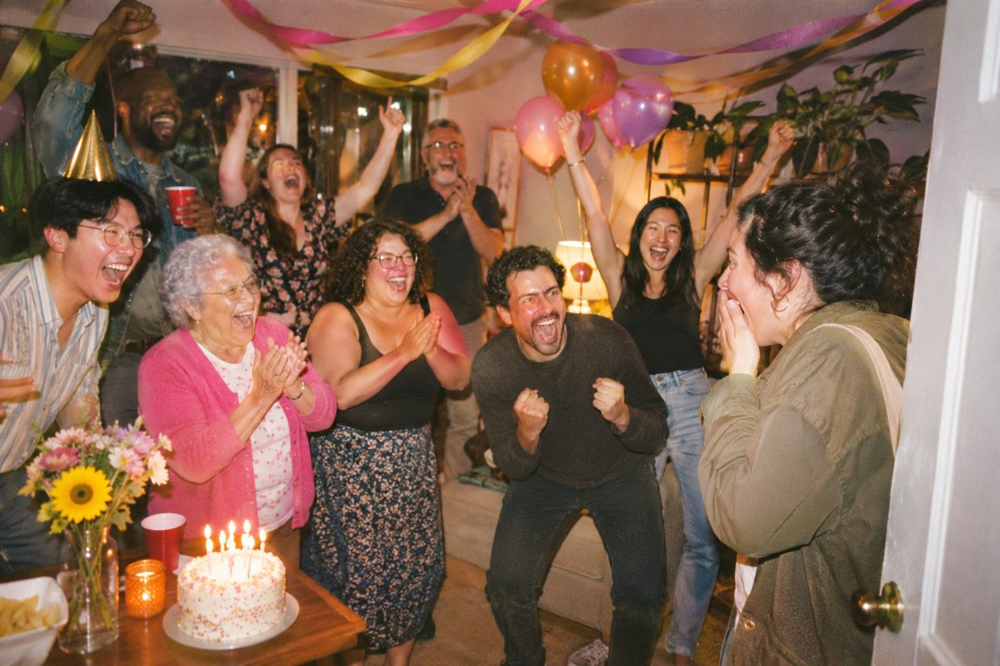

Birthday Slideshow Ideas: 8 Structures and 43 Songs by Mood
Ideas by occasion, the photo math for any song and a secret way to collect them.

Short answer: The best birthday slideshow ideas give the photos a shape: decade by decade for a milestone, then-and-now pairs, an A-to-Z of inside jokes, or one photo and one line from each friend. Plan about 5 seconds per photo, so a 4-minute song carries roughly 45 photos, and end on a recent photo with the people in the room.
A birthday slideshow is the one part of a party that makes a loud room go quiet, as long as it’s good. This guide gives you birthday slideshow ideas by occasion (milestones, surprises, kids, a friend’s reel), eight structures that keep people watching, a quiet way to collect photos before a surprise, 43 songs sorted by mood, and the right tool for a TV versus a phone.
Birthday slideshow ideas by occasion
Start with who’s watching and where. A slideshow on a living-room TV for 30 standing guests is a different thing from a reel friends watch on their phones the next morning.
Milestone birthdays: 30, 40, 50, 60 and up
Go decade by decade, and make each decade about people as much as places: the college roommates, the first job’s team, the kids arriving. Give every decade a title card and roughly the same number of photos, 6 to 10, so nobody’s era feels skipped. For a 70th, 80th or 90th, add a short “generations” section near the end and make captions big enough to read from the back of the room.
Surprise parties
The slideshow is the second surprise. Play it 20 to 30 minutes after the big moment, once the birthday person has hugged everyone and found a drink, not while they’re still in the doorway. Keep it to one song. Surprise parties are usually standing parties, and a short show that ends while people still want more beats a long one they talk over.
Kids’ birthdays, made by parents
For a first birthday, one photo per month is the classic: 12 photos, newborn to cake, in about a minute. For older kids, one photo from each birthday shows the growth better than a random pile. Aim for 60 to 90 seconds set to their current favorite song. From about age 10, let them veto photos; bath-time pictures stay in the family album.
A friend’s birthday reel for social
Here the rules flip: vertical 9:16, 15 to 30 seconds, 10 to 20 photos, one inside joke as on-screen text, posted on the morning of their birthday. Add the song inside Instagram or TikTok rather than baking it into the file (more on music rules below). Our guide to making a recap video covers pacing, captions and export settings for vertical reels.
8 ways to structure a birthday slideshow
A slideshow without a structure is a camera roll on shuffle. Pick one of these before you choose a single photo: it tells you what to ask friends for and what to cut.
- Decade by decade. A title card for each decade (“The ’90s: braces, bowl cut, big plans”), 6 to 10 photos each and, if you’re willing to edit music, a hit from that decade under each section.
- Then and now. Pair a childhood photo with a recent one in the same pose, place or outfit. Five or six good pairs carry a whole song. Bonus: have the birthday person recreate one old photo at the party, and next year’s show has its first slide.
- A to Z. Twenty-six slides, one letter each: “B is for the borrowed van,” “K is for karaoke, every Thursday.” At 6 seconds a slide that’s 2 minutes 36 seconds, about one song.
- Friends’ messages. Each friend sends one photo with the birthday person plus one sentence, shown as a caption. It turns the slideshow into a group card, and it’s the easiest structure to collect for.
- The week they were born. Open with the song that was number one the week they were born. Billboard’s Hot 100 chart archive lets you look up any week by date, back to August 1958.
- Firsts. First steps, first car, first apartment, first day at the job they still complain about. The chronology comes free.
- Guess the year. Show a photo with “What year?” on screen, hold it for a beat, then reveal the answer on the next slide. Best for 8 to 10 photos in a room where everyone knows each other.
- Every birthday cake. Gather every cake photo you can find and play them in order. It’s funny and touching at once, and it ends naturally on tonight’s cake.
Whatever you choose, spend the most time on the first and last slides. Open on a photo that tells everyone what kind of show this is: a baby photo gets an instant “aww,” a truly bad haircut gets a laugh. Close on the present, with a recent photo of the birthday person and the people in the room.
How do you collect photos for a surprise birthday slideshow?
Collecting is where surprise slideshows fall apart: photos arrive through six apps, half of them blurry screenshots, and someone mentions the project in a chat the birthday person can read. Ten minutes of setup prevents all of it.
Pick one private drop point
- An upload link. A Dropbox file request is the simplest. Dropbox’s help page says anyone can send files to one “whether they have a Dropbox account or not,” and uploads land in a folder you control. They count against your Dropbox storage, so check you have room.
- A shared album. Google Photos and iCloud shared albums work when every contributor has the right account. Make sure the birthday person isn’t a member. Our guide to the best way to share photos with a group compares the options.
- A group chat without them. Fast, but photos sent through chat apps are often compressed, and it shows on a big TV. Ask for originals as files.
Ask for specific photos, with a deadline
“Send me some photos” gets you three photos from two people. A specific ask gets five from everyone. Set the deadline 5 to 7 days before the party so you have a weekend to edit. Copy, edit and send:
Secret project for Sam’s 40th on the 14th! Please send 5 photos by Sunday the 7th: one from when you met, one that makes you laugh, one of the two of you, one Sam would hate (I’ll choose carefully) and one recent. Upload here: [link]. Please don’t mention it anywhere Sam can see. Thank you!
Old prints? Shoot them flat, in daylight, with no glare. Our wedding slideshow guide walks through scanning prints with a phone, and the steps are the same for birthday photos.
Or shoot new photos that reveal at the party
For fresh material instead of archives, use a shared camera that stays sealed until the party: during the week, each friend shoots a photo holding a handwritten birthday message, and nobody sees any of them until the reveal. The Filmsera section below shows how to set it up.
How long should a birthday slideshow be?
Shorter than you think. At a party, one song of 3 to 4 minutes is the sweet spot, and two songs is the ceiling unless everyone is seated. For pacing, 5 seconds a photo is a good default; it’s also the default PowerPoint uses when it turns a presentation into a video. Slow, emotional songs can hold a photo for 6 or 7 seconds; fast songs want 2 or 3.
| Where it plays | Length | Photos | Songs |
|---|---|---|---|
| Phone reel for social | 15–30 seconds | 10–20 (1.5–2 s each) | One clip of a song |
| Kids’ party | 1–1.5 minutes | 12–18 (5 s each) | Part of one song |
| Surprise or house party, standing | 3–4 minutes | 35–45 (5 s each) | One |
| Milestone dinner, seated | 6–8 minutes | 70–90 (5 s each) | Two |
| Looping in the background | Any length | 100 or more | A playlist |
The math: 60 seconds divided by 5 is 12 photos a minute, minus a few seconds for title cards. Sitting on 400 photos? Cut in passes: duplicates and blurry shots first, then anything without a face, then everything but the best photo of each moment. For more on timing, see how long a slideshow should be; it’s written for weddings, but the numbers carry over.
Birthday slideshow songs for adults, kids and everyone in between
Every song below is a real recording with the artist checked. Pick by feel, then check the length, because the song sets your photo count. A reliable two-song pattern: something nostalgic over the childhood years, then something upbeat that carries the show to the present.
Upbeat: openers and party energy
- “Birthday” by the Beatles, the obvious opener that still works
- “Happy Birthday” by Stevie Wonder
- “Celebration” by Kool & the Gang
- “September” by Earth, Wind & Fire
- “Dancing Queen” by ABBA
- “Don’t Stop Me Now” by Queen
- “Good as Hell” by Lizzo
- “Uptown Funk” by Mark Ronson featuring Bruno Mars
- “Can’t Stop the Feeling!” by Justin Timberlake
- “Levitating” by Dua Lipa
- “Birthday” by Katy Perry
- “22” by Taylor Swift, for exactly one birthday
Nostalgic: childhood photos and milestones
- “In My Life” by the Beatles
- “Forever Young” by Alphaville (Rod Stewart’s different song of the same name works too)
- “Time After Time” by Cyndi Lauper
- “Landslide” by Fleetwood Mac, for anyone turning 40 or older and feeling it
- “Photograph” by Ed Sheeran
- “Memories” by Maroon 5
- “Good Old Days” by Macklemore featuring Kesha
- “Golden Hour” by JVKE
- “What a Wonderful World” by Louis Armstrong
- “Here Comes the Sun” by the Beatles
Funny: the awkward years and the roast
- “It’s My Party” by Lesley Gore, played ironically
- “Stayin’ Alive” by the Bee Gees, for a 50th or later
- “When I’m Sixty-Four” by the Beatles, for the obvious birthday
- “Glory Days” by Bruce Springsteen, over the sports photos
- “Teenage Dirtbag” by Wheatus, over the high school section
- “Oops!... I Did It Again” by Britney Spears, over the questionable decisions
- “Ice Ice Baby” by Vanilla Ice, over anything from the ’90s
- “I Will Survive” by Gloria Gaynor
- “Never Gonna Give You Up” by Rick Astley, as a fake-out ending
- “Bye Bye Bye” by NSYNC, over the final slide
For kids, parents and friends
- “Isn’t She Lovely” by Stevie Wonder, for a daughter
- “Beautiful Boy (Darling Boy)” by John Lennon, for a son
- “Never Grow Up” by Taylor Swift
- “You’ve Got a Friend in Me” by Randy Newman
- “Three Little Birds” by Bob Marley and the Wailers
- “The Best Day” by Taylor Swift, for a mom’s birthday
- “Humble and Kind” by Tim McGraw, for a parent or grandparent
- “Count on Me” by Bruno Mars, for the friends section
- “Thank You for Being a Friend” by Andrew Gold
- “Lean on Me” by Bill Withers
- “Young at Heart” by Frank Sinatra, for a 70th, 80th or 90th
Can you use these songs?
At a party in your living room, play whatever the birthday person loves. Posting online is different. Meta’s music guidelines say content “may be blocked, muted or removed” if your use of the music isn’t properly authorized. For the online version, upload the video without the song and add it through Instagram’s or TikTok’s own music picker, or use a track from YouTube’s Audio Library, which YouTube calls copyright-safe for videos (Creative Commons tracks need the artist credited).
Birthday slideshow maker: phone apps vs desktop
Match the tool to the screen: a phone app for a vertical reel, a computer for a long widescreen show on a TV. Details are as of November 2026.
| Tool | Works on | Best for | Keep in mind |
|---|---|---|---|
| Photos app (memory movies) | iPhone | A quick slideshow from photos already on your phone | Add, remove and reorder photos and change the music; fewer controls than an editor |
| CapCut | iPhone, Android, computer | Beat-synced vertical reels and templates | Free with in-app purchases; Auto Cut syncs clips to a song’s beat |
| Canva | Browser, computer, phone | Designed title cards and text-heavy slides | Best for a designed look rather than a fast cut |
| PowerPoint or Keynote | Computer | Seated shows with lots of text and exact timing | Keynote is free on Apple devices, PowerPoint is paid; both export video (PowerPoint up to 1080p, or 4K on Windows 10 or later) |
| iMovie | iPhone, iPad, Mac | Widescreen versions for a TV | Projects are widescreen (16:9), so vertical clips get black bars |
| Filmsera | Host on iPhone; guests join from any phone | A 10–30 second reel of the party itself | Built from the night’s photos at the reveal; not a long slideshow |
Two practical notes. Vertical phone photos on a widescreen TV leave black bars; many editors can fill the sides with a blurred copy of the photo, or you can pair two vertical photos side by side. And play the final file from a downloaded copy on the device you’ll plug in, never from a streaming link over party Wi-Fi.
Birthday slideshow mistakes to avoid
- Photos they’d hate. Exes, bath photos, the photo they untagged themselves from. Ask a partner or sibling for a final veto pass.
- Tiny captions. Read every caption from across the room on the actual TV before the party.
- Only your photos. If everything comes from your phone, the slideshow is about your friendship, not their life.
- No test run. Check the TV input, the cable or adapter and the volume an hour before guests arrive.
Make a short reel from the party itself
The slideshow covers the years before the party. The party deserves a record too, and nobody wants to spend the night directing it. That’s the job Filmsera does: everyone shoots, and the reel makes itself.
- On your iPhone, create a film for the party, name it and pick when it develops. The “Tonight,” “Tomorrow” and “In 3 days” presets all develop at 9 p.m.; for a next-morning or brunch reveal, choose “Custom” and set the time. See choosing the right reveal time.
- Put the QR code by the drinks or text the invite link. Guests join from the free Filmsera iPhone app or from their phone’s browser, with no app or account, and shoot on their own phones. Quick setup gives each guest 12 shots.
- Nobody sees anything until the reveal, including you. Then the whole roll appears at once for everyone in the film, each photo tagged with who took it, and a vertical recap reel builds itself and starts playing.
The recap usually runs 10 to 30 seconds and draws on up to 40 photos plus any video clips. It auto-picks the keepers, dropping blurry shots and collapsing near-duplicate bursts, and the cuts snap to the beat. Pick one of 9 free templates, then a song: one of 6 built-in royalty-free tracks (they’re Creative Commons, so credit the artist when you post), your own file from Files, or a downloaded, DRM-free song from your Apple Music library. Then save it to Photos or share it through the iOS share sheet.

For the surprise version described above, start the film a week early and choose “Custom” to set the reveal for soon after everyone has gathered. Leave some slack, because a timed film can’t be opened early, even by you. Nobody can preview the photos either, so when every one needs vetting (a grandparent’s 90th, say), build the slideshow by hand.
The honest limits, as of November 2026: the host needs an iPhone, browser guests take photos only, and video clips need the iPhone app and a Celebration or Wedding film. A free film covers up to 10 guests; bigger parties use a one-time pass for that film. Free recaps export at 480p with a watermark, and HD (1080×1920, no watermark) needs Filmsera Pro or a film pass. Free films keep photos for 30 days after the reveal, so save what you want. More on Filmsera for birthdays and house parties, plus a shot list in our birthday party photo ideas.
Filmsera collects everyone’s party photos in one sealed roll, then builds a beat-synced recap reel at the reveal. Get Filmsera on the App Store
FAQ
How many photos do you need for a birthday slideshow?
At about 5 seconds per photo, you need around 12 photos per minute. A one-song slideshow of 3 to 4 minutes takes 35 to 45 photos, and a seated milestone show of 6 to 8 minutes takes 70 to 90. A phone reel of 15 to 30 seconds needs only 10 to 20. Collect two or three times as many as you need, then cut.
What is the best free birthday slideshow maker?
It depends on the screen. On iPhone, the Photos app’s memory movies let you pick photos and swap the music in minutes. CapCut is free with optional paid upgrades and handles beat-synced vertical reels. For a widescreen TV version, iMovie and Keynote are free on Apple devices and give you more control over timing and text; PowerPoint does the same if you already have it.
Can I use popular songs in a birthday slideshow?
For a slideshow played at a private party, pick whatever the birthday person loves. Posting online is different: platforms can mute, block or remove videos that use music without the right permissions. For the online version, add the song through Instagram’s or TikTok’s own music picker, or use a royalty-free track, crediting the artist when the license requires it.
How do you collect photos for a surprise slideshow without them finding out?
Use one private drop point the birthday person can’t see, such as a Dropbox file request (contributors don’t need a Dropbox account) or a shared album they aren’t in. Send a specific ask, like five photos from different eras, with a deadline about a week before the party, and keep it out of any chat they’re in.
When should you play the slideshow at a birthday party?
After the arrival rush and before the cake is the usual sweet spot: people have a drink, the room is full and nobody is leaving yet. At a surprise party, wait 20 to 30 minutes after the surprise. At a seated dinner, play it between the main course and dessert, then go straight into the candles.
How do you end a birthday slideshow?
End on the present. A recent photo of the birthday person with the people in the room lands better than the funniest throwback, and it hands the moment back to the party. A simple closing card with their name and the date works too, and it’s a natural cue to bring out the cake.
Written by the Filmsera team
Filmsera is a shared disposable camera app for iPhone: create a film for your event, let guests join by QR code from the app or their phone's browser, and open the whole roll together at the reveal. Download on the App Store →
Photos in this article are illustrations created for Filmsera, not customer photos. App screenshots are from Filmsera on iPhone.